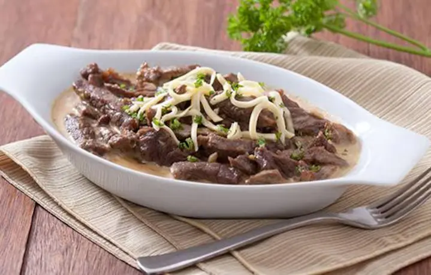

Cheesy Creamy Beef

Description:
Combine the richness of beef sirloin with garlic, butter, and cheese, and enjoy a
dish made more rewarding with Knorr. Prepare the extra rice!
Ingredients:
- 2 tbsp butter
- 1 tbsp canola oil
- 2 tbsp garlic, chopped
- ½ kg beef strips, sirloin
- 2 pcs Knorr Beef Cube
- ½ cup all-purpose cream
- 1 cup grated quickmelt cheese
- ½ tsp cayenne pepper
- 2 tbsp parsley, chopped
Instructions:
-
Get your pan nice and hot over medium heat. Melt some butter and add a bit of
oil to prevent butter from burning. Now, throw in the garlic and beef before
adding the Knorr Beef Cubes. Just continue cooking for a minute or two.
-
For the next step, pour in the cream and cayenne then just give this 15-20
minutes to simmer.
-
Finally, top it with cheese and sprinkle with parsley and that’s our dish!